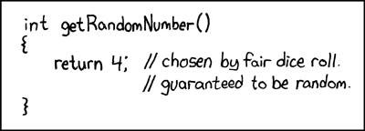

future 1.24.0 is on CRAN. It comes with one significant update related to random number generation, further deprecation of legacy future strategies, a slight improvement to plan() and tweaks(), and some bug fixes. Below are the most important changes.

future(…, seed = TRUE) updates RNG state
In future (< 1.24.0), using future(..., seed = TRUE) would not forward the state of the random number generator (RNG). For example, if we generated random numbers in individual futures this way, they would become identical, e.g.
f <- future(rnorm(n = 1L), seed = TRUE)
value(f)
#> [1] -1.424997
f <- future(rnorm(n = 1L), seed = TRUE)
value(f)
#> [1] -1.424997This was a deliberate, conservative design, because it is not obvious exactly how the RNG state should be forwarded in this case, especially if we consider random numbers may be generated also in the main R session. The more I dug into the problem, the further down I ended up in a rabbit hole. Because of this, I have held back on addressing this problem and leaving it to the developer to solve it, i.e. they had to roll their own RNG streams designed for parallel processing, and populate each future with a unique seed from those RNG streams, i.e. future(..., seed = <seed>). This is how future.apply and furrr already do it internally.
However, I understand that design was confusing, and if not understood, it could silently lead to RNG mistakes and correlated, and even identical random numbers. I also sometimes got confused about this when I needed to do something quickly with individual futures and random numbers. I even considered making seed = TRUE an error until resolved, and, looking back, maybe I should have done so.
Anyway, because it is rather tedious to roll your own L’Ecuyer-CMRG RNG streams, I decided to update future(..., seed = TRUE) to provide a good-enough solution internally, where it forwards the RNG state and then provides the future with an RNG substream based on the updated RNG state. In future (>= 1.24.0), we now get:
f <- future(rnorm(n = 1L), seed = TRUE)
v <- value(f)
print(v)
#> [1] -1.424997
f <- future(rnorm(n = 1L), seed = TRUE)
v <- value(f)
print(v)
#> [1] -1.985136This update only affects code that currently uses future(..., seed = TRUE). It does not affect code that relies on future.apply or furrr, which already worked correctly. That is, you can keep using y <- future_lapply(..., future.seed = TRUE) and y <- future_map(..., .options = furrr_options(seed = TRUE)).
Deprecating future strategies ‘transparent’ and ‘remote’
It’s on the roadmap to provide mechanisms for the developer to declare what resources a particular future needs and for the end-user to specify multiple parallel-backend alternatives, so that the future can be processed on a worker that best can meet its resource requirements. In order to support this, we need to restrict the future backend API further, which has been in the works over the last couple of years in collaboration with existing package developers.
In this release, I am formally deprecating future strategies transparent and remote. When used, they now produce an informative warning. The transparent strategy is deprecated in favor of using sequential with argument split = TRUE set. If you still use remote, please migrate to cluster, which since a long time can achieve everything that remote can do.
On a related note, if you are still using multiprocess, which is deprecated in future (>= 1.20.0) since 2020-11-03, please migrate to multisession so you won’t get surprised when multiprocess becomes defunct.
For the other updates, please see the NEWS.
Happy futuring!
Henrik